Necesitamos un objeto que será el que se aparezca y desaparezca en la pantalla. Necesitaremos también 3 botones para elegir entre los 3 niveles disponibles y un cuarto botón para volver atrás y seleccionar de nuevo el nivel.
Usaremos un escenario cualquiera que seleccionaremos del la biblioteca.
Para descargar los objetos necesarios para el juego, lo haremos desde este link. Es un archivo comprimido con 5 objetos. Lo descargaremos y lo descomprimimos en el directorio del alumno.
El juego consiste en que hay una estrella que aparece y desaparece en posiciones aleatorias de la pantalla.
Cada vez que le hagamos un click, sumaremos un punto. Tendremos niveles que se irán desbloqueando según
vayamos consiguiendo determinados puntos.
Antes de poner niveles vamos a hacer que el juego funcione solo con la estrella.
Lo primero que haremos será posicionar la estrella y crear e inicializar las variables "Puntos" y "Segundos".
La variable "Segundos" nos indicará el número de segundos que aparece la estrella en la pantalla.
La estrella la mostraremos este número de segundos y la oculatremos también ese número de segundos antes de
volver a colocarla en otra posición aleatoria y volver a mostrarla.
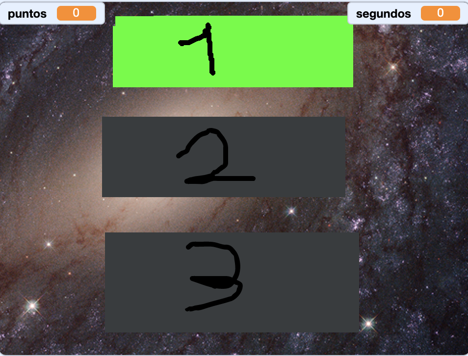
Al hacer click en la estrella haremos un sonido, sumaremos un punto y la volveremos a esconder.
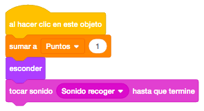
Ahora que nos funciona la estrella, vamos a poner el primer nivel.
Pondremos el primer botón y lo colocaremos en la pantalla. Al empezar el juego, ocultaremos la variable
"Puntos" hasta que seleccionemos algún nivel.
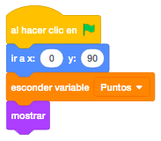
Ahora programaremos el evento "Al Hacer Click En Este Objeto" para que al pinchar en el botón del primer
nivel empiece el juego.
Dependiendo del nivel seleccionado, la estrella se va a mostrar distinto tiempo. En este caso, el nivel 1,
mostraremos la estrella durante 2 segundos. Le daremos ese valor a la variable "Segundos".
Además, crearemos un mensaje "Esconder" que programaremos en cada botón para esconderlos cuando pulsemos
alguno de ellos y otro mensaje "Jugar" para empezar a mostrar y esconder la estrella.
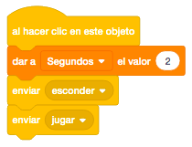
En el mensaje "Esconder" de este objeto, lo esconderemos y en el mensaje "Jugar" mostraremos la variable "Puntos".
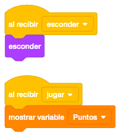
Ahora cambiaremos en la estrella, en la parte del bucle que hace aparecer y desaparecer la estrella, el
bloque de control "Al Hacer Click En La Bandera" por "Al Recibir El Mensaje Jugar" para que en lugar de que
la estrella se empiece a ver al darle a la bandera, lo haga al pinchar en el botón.
También quitaremos el saignar el valor a la variable "Segundos" ya que eso se hará en cada uno de los
botones".
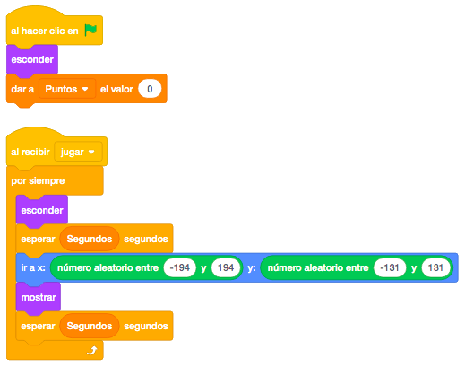
Es hora de poner el objeto del botón atrás. Este botón aparecerá cuando estemos jugando con la estrella y nos servirá para ir a la pantalla de selección de nivel. Lo mostraremos al recibir el mensaje "Jugar".
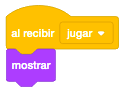
Como siempre, colocaremos el botón en la parte inferior derecha y programaremos que "Al Hacer Click En El Objeto" envíe el nuevo mensaje "Atrás" donde esconderemos lo que no nos haga falta. En el caso de este objeto, al recibir el mensaje "Atrás", esconderemos la variable puntos y el propio botón.
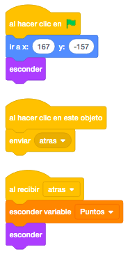
Para terminar con la funcionalidad de volver al menú de selección de nivel, nos quedaría programar en el objeto del primer botón, que al recibir el mensaje "Atrás", muestre el propio botón. Y en la estrella, que al recibir este mismo mensaje esconda la estrella y detenga los programas de la estrella.
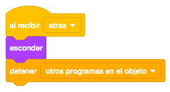
Ya nos funciona con un nivel. Vamos a añadir los otros dos.
Los botones 2 y 3 tienen 2 disfraces, uno gris y otro de color. Empezarán con el color gris (no podrán ser
pulsados) y no cambiarán de color (podrán ser pulsados) hasta que no lleguemos a cierta puntuación.
Empezaremos por el botón del segundo nivel. Lo primero que programaremos será colocarlo en la pantalla y
ponerle el disfraz gris.
Al recibir "Esconder", lo ocultaremos.

En el bloque de control "Al Hacer Click En El Objeto" daremos a la variable "Segundos " el valor "1" para que aparezca y desparezca más rápido y también enviaremos los mensajes "Jugar" y "Esconder". Todo esto solo lo haremos si el botón no tiene el disfraz gris.
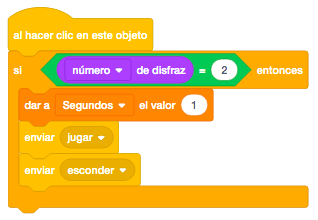
Al recibir el mensaje "Atrás", mostraremos el botón y cambiaremos de disfraz al de color siempre que hayamos sobrepasado los puntos necesrios para ir al segundo nivel. En nuestro caso 4 puntos.
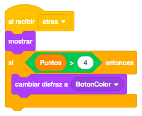
Despues de poner el botón del segundo nivel y verlo funcionar, añadimos el botón del tercer nivel. Lo programaremos igual que el segundo pero cambiando el valor de la variable "Segundos" para que en este tercer nivel la estrella aparezca y se oculte más rápidamente a "0.5" y el valor de los puntos necesarios para poder acceder al tercer nivel de la variable "Puntos", en nuestro caso a "6".
Otro reto que se puede añadir al juego es que al llegar a un determinado número de puntos, esconda todos los objetos y cambie a un escenario que ponga "Game Over".
Y el juego quedaría así.

Para ver el juego terminado pulsa
aquí.
Para descargarte el juego terminado pulsa
aquí.